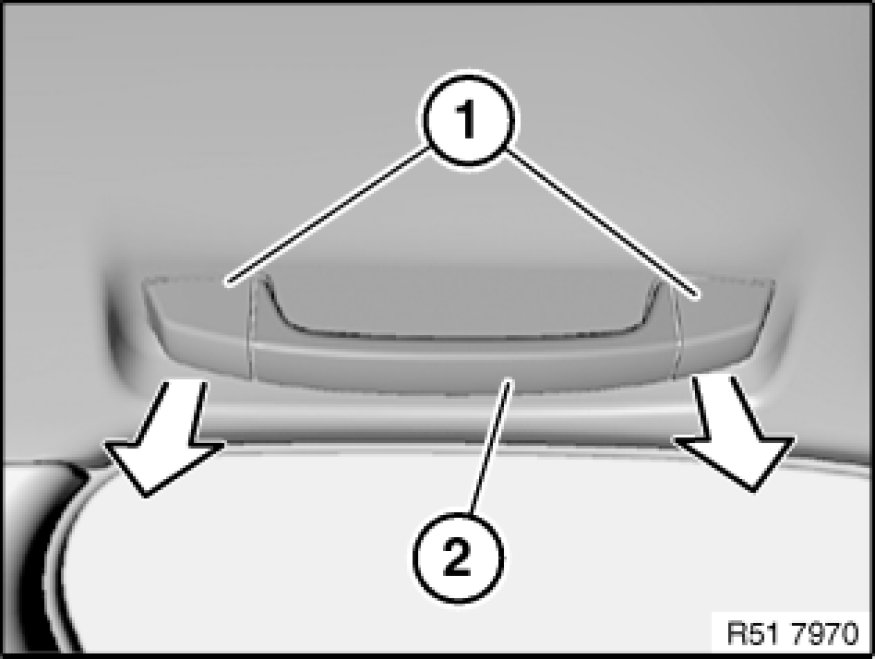
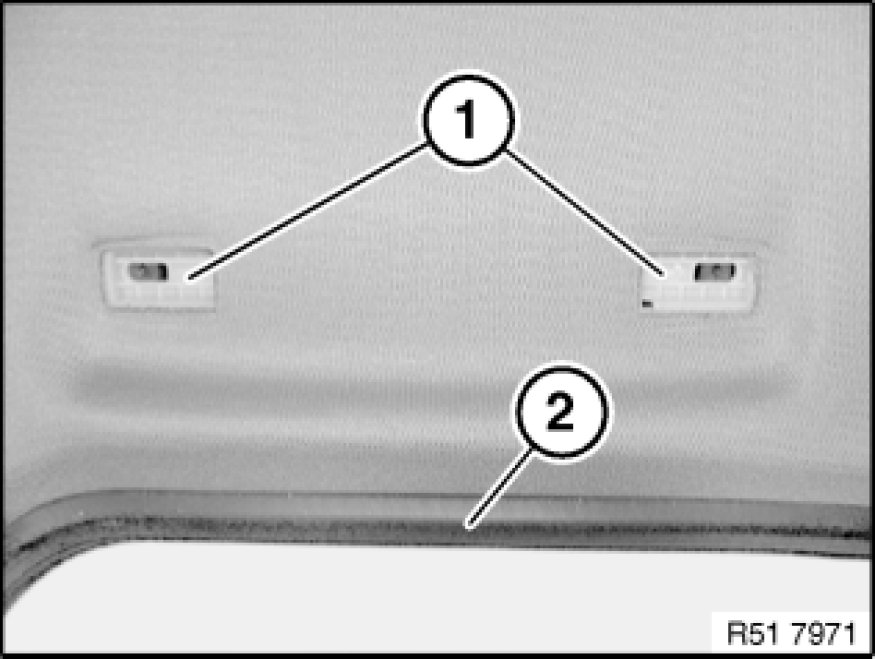
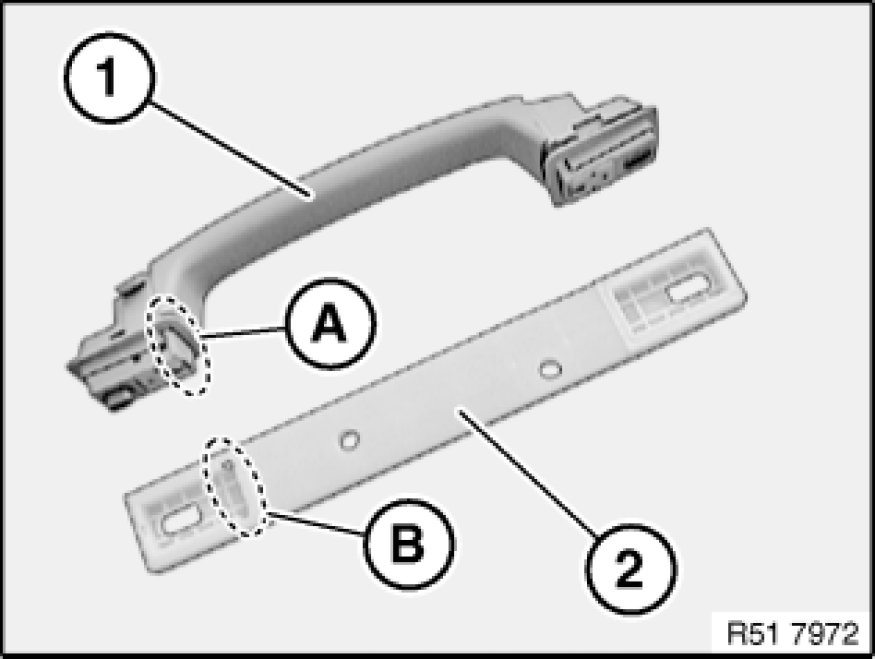

51 16 480 Removing and Installing or Replacing Front Grab Handle
51 16 480 - Removing and installing or replacing front grab handle

Carefully lever out trims (1).
Release screws underneath and remove grab handle (2).

Note:
When replacing or when lowering or removing the roofliner, it is necessary to remove the intermediate plate (1) beforehand.
If necessary, pull off door seal (2) and feed out intermediate plate (1).

Installation:
Intermediate plate (2) must be installed in correct position.
Guide in area (A) of grab handle (1) must fit in groove in area (B) of intermediate plate (2).